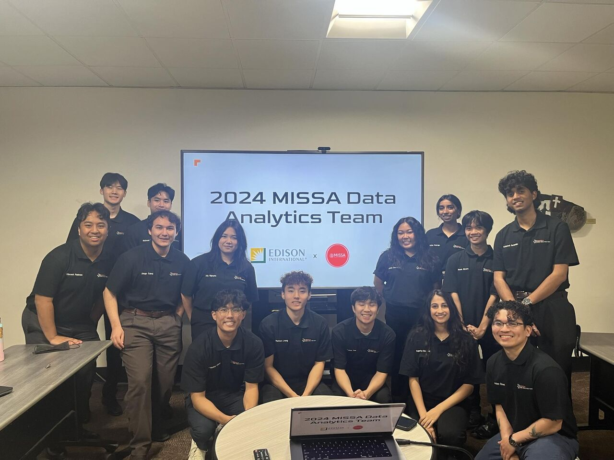

My Story
My name is Abhishek Sarepaka, and I am a senior at Cal Poly Pomona majoring in Computer Science with a minor in Data Science.
Growing up, I was the kid who could spend hours solving puzzles and asking questions about how things worked. That constant search for the “why” behind everything sparked my curiosity for patterns and eventually for data.
As I learned more, I realized that data is not just numbers on a screen; it is a language that reveals how the world operates. That realization inspired me to pursue a career where I could use data to uncover insights and create meaningful solutions.
At Cal Poly Pomona, I have brought that passion to life through consulting projects with real companies, competitions that test analytical thinking, and research aimed at advancing data-driven innovation. Each experience has strengthened my belief that data, when used thoughtfully, has the power to turn curiosity into measurable impact.
I am now focused on continuing that journey by building systems and models that help organizations make smarter and more confident decisions.
Guiding Principles
Experience Highlights
First Step into Data
Started my journey at Cal Poly Pomona and entered my first data analytics competition — placing 3rd and discovering a passion for turning messy data into meaningful insight.
Learning Through Collaboration
Joined the MISSA Data Analytics Team and worked on my first consulting project with Southern California Edison, applying data to solve real-world energy challenges and seeing teamwork bring impact to life.
Turning Curiosity into Impact
Expanded into AI research and continued growing through new consulting challenges — including a data-driven market analysis project for Boeing that strengthened my love for applied analytics.
From Student to Practitioner
Stepped into industry through internships at Navi and Avanade, building scalable data systems and ML pipelines that bridged technical rigor with real business value — my first step into professional data engineering.
Skills Snapshot
Machine Learning
Engineering
Storytelling
“Data doesn’t change the world — people who know what to do with it do.”
Beyond the Data

I mentor emerging analysts, explore responsible AI, and design data interfaces that make complex ideas feel simple. My north star has always been to build tools people trust when the stakes are high, because technology means little without the confidence and clarity it gives to the people using it.
In my current role as the Director of Data Analytics at MISSA, I strive to uphold the organization’s core value of service by creating opportunities for others to grow. I lead with the belief that true impact extends beyond personal achievement and is measured by how well we help others reach their potential. Whether it is guiding a student through their first project or designing a framework to strengthen collaboration, I aim to make data feel both accessible and empowering.
Leadership, to me, is about consistency and compassion. It means taking the time to listen, understanding the perspectives of others, and ensuring that every voice feels valued. I believe that strong teams are built on trust, shared goals, and the willingness to learn together, not just on technical excellence.
Mentorship has become one of the most meaningful parts of my professional journey. I see it as a continuous exchange of knowledge and perspective, sharing what I have learned while remaining open to new insights from those I mentor. Each conversation is a reminder that growth is mutual and that every interaction shapes both the teacher and the learner.
I carry forward the lessons of those who have guided me, honoring their influence by investing time and care into the next generation of data professionals.